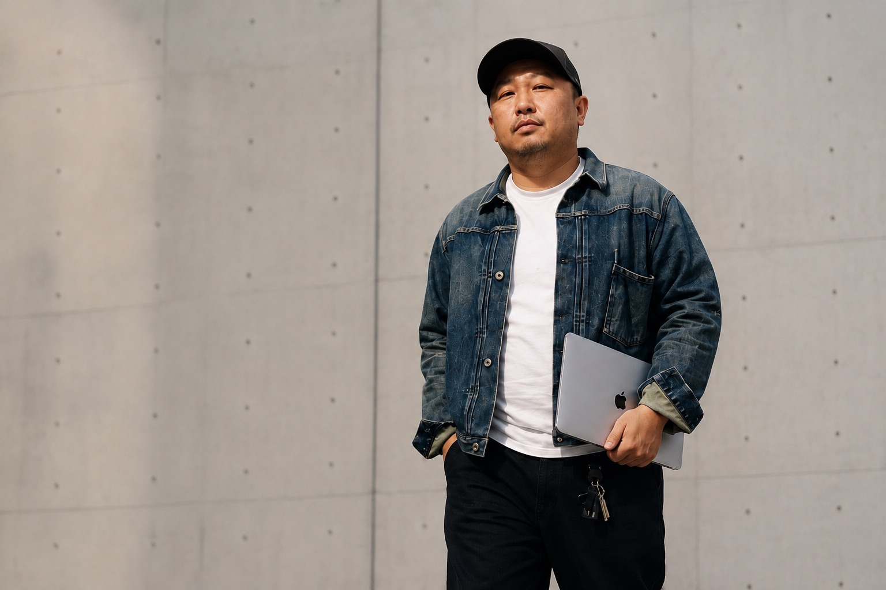
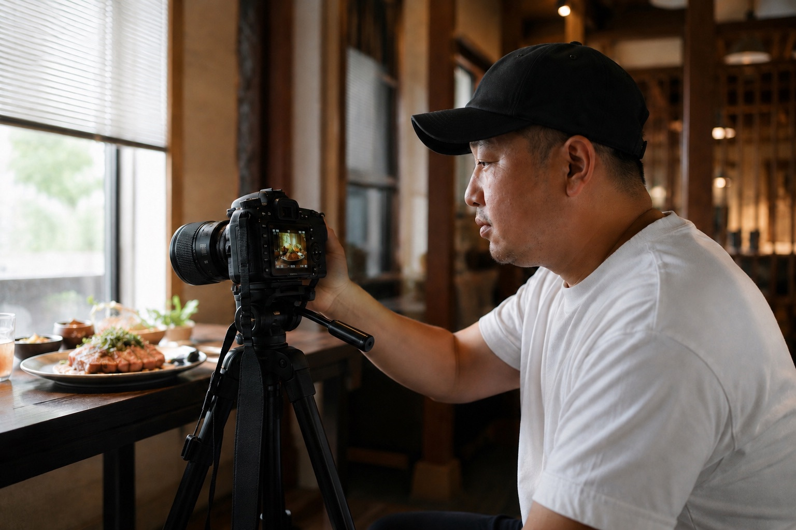
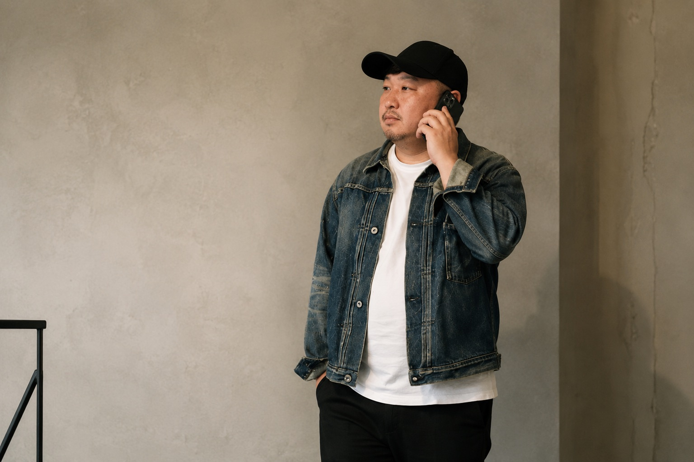

01
事前相談
見積もりや提案書が届いた。内容を一緒に見て、分かる言葉に整理します。
不安を抱えたまま
作らなくていい
まず、あなたが何をしたいかを聞く
そこから始める相談サービスです
まず聞く
あなたに合った提案をする
それが、KIKU FIT
スリーイーデザインが提供するサービスです

見積もりや提案書が届いた。内容を一緒に見て、分かる言葉に整理します。
打ち合わせで聞いておきたいことを整理し、
終わったあとに内容を確認します。
伝えたいことを整理して、返信の内容を一緒に考えます。
提案より先に
状況を整理する
見積もりも、打ち合わせも、返信も
ひとりで抱え込まなくていい
聞いた内容をその場で整理し
次の一歩を一緒に考えます
サーバーは土地、ドメインは住所、ホームページは建物です。
保守は、マンションでいう管理人のようなもの。何をどこまで管理しているのかを、一緒に確認します。
目的が曖昧なままでは、きれいに作っても機能しません。
話を聞いて整理した内容を、制作会社に伝える。そこから、伝わるデザインが生まれます。
目的によって発信する内容も、使う媒体も、続け方も変わります。
方法を決める前に、まず目的を聞きます。
きれいに撮る前に
何を見せたいかを整理する
メニューも、看板も、SNSも
雰囲気だけでは伝わりません
光や構図、仕上がりまで考えて
伝わる1枚に仕上げます

サーバー、ドメイン、保守、制作費。何にいくらかかっているのか、一緒に整理します。保守は、マンションの管理人のようなもの。契約はあっても、機能していないこともあります。
インターネット上にホームページを作ります。これでは、道に家を建てますと言っているのと同じです。サーバーは土地、ドメインは住所。役割まで分かる言葉で説明します。
ホームページやSNSありきでは考えません。まず何をやりたいのかを聞き、今の状況と目的に合った方法を一緒に考えます。
何を作りますかより先に
何をしたいですかを聞く
ホームページも、デザインも、SNSも
伝わらない言葉を、伝わる言葉に
発注する側と制作会社の間に立って
内容を整理します
Q.
うちのホームページどう？
とりあえず業者さんに任せて作ったんだけど…
A.
何が目的で作りましたか？
まず目的を整理してみましょう。
Q.
いまは人が欲しいから
リクルート向けかな！
A.
でしたらリクルート向けとして
何が必要か整理してみましょう。
Q.
何が必要かな？
A.
若い子向けですか？
中途採用が目的ですか？
若い子向けなら
ご家族にも
安心してもらえる内容に
してみませんか？
Q.
そうしてみようかな！
相談だけ乗ってもらって
大丈夫？
A.
大丈夫ですよ！
目的をまとめてから
業者さんに
お願いしてみましょう！
あれ？
スリーイーデザインに
頼まなくてもいいの？
いいんです。
それがKIKU FITです。
制作する側も
目的がわかれば
作りやすくなります。
一度話してください。
整理すれば意外とシンプルです。
Q.
うちのロゴどうかな？
A.
コンセプトはありますか？
Q.
とりあえず業者さんに
任せて作ったんだけど…
A.
一度コンセプトを
確認してみては
どうですか？
Q.
なんて聞けばいいかな？
A.
うちのロゴマークの
コンセプトは？
シンボルマークに
込めた意味は？
こんな聞き方が
おすすめです。
Q.
名刺を作る時に
それっぽく作ってもらったから
コンセプトや意味は
特にないみたい…
A.
いまのロゴマークを分析して
意味を持たせて
みましょうか？
Q.
やってみたら
愛着が湧いてきたな…
A.
よかったです！
なんとなくのロゴマークに
価値が生まれましたね。
あれ？
スリーイーデザインに
頼まなくてもいいの？
いいんです。
それがKIKU FITです。
意味のないデザインより
意味のあるデザインへ。
Q.
ネット回線が
繋がらないんだけど…
A.
一度ホームゲートウェイの
電源を切ってみてください！
Q.
なにそれ？
A.
おそらく電話機の近くに
黒か白の四角い箱が
あるはずです。
Q.
あった！
どうしたらいいの？
A.
思い切って
コンセントを抜いて
30秒放置しましょう！
Q.
直った！
A.
調子が悪い時は
コンセントを
抜いてみてください。
Q.
ついでに娘が
一人暮らしするんだけど
Wi-Fiはどれがいい？
A.
使い方や住む場所によって
必要な回線も変わります。
まずは契約内容を
確認しましょう。
Q.
買おうとしてたWi-Fiより
安くすみそう！
ネットで買って送ろう！
あれ？
スリーイーデザインに
頼まなくてもいいの？
いいんです。
それがKIKU FITです。
Q.
知り合いがお店
出すんよ！
これがロゴだって！
感想聞かれてさ！
プロの目からしたらどう？
A.
拝見しますね。
このロゴには
どんな意味が
あるんですか？
Q.
わかんないけど
知り合いに
頼んだみたい！
A.
なるほど！
1点気になるところが…
この名前なら
ローマ字表記の
つづりが違うと思います！
あえてそうしてるなら
いいと思いますけど！
Q.
ほんとや！
これ恥ずかしいやつやんw
教えてあげよ！
…やっぱり間違ってたみたい。
助かったって
喜んでたよ！
A.
よかったですね！
僕が細かいこと
気になるんです
すいませんw
あれ？
スリーイーデザインに
頼まなくてもいいの？
いいんです。
それがKIKU FITです。
Q.
5mの看板を作りたいんだけど
看板屋さんに
写真はiPhoneで撮れば大丈夫って
言われたんだけど大丈夫かな？
A.
それは危険かもしれません！
Q.
なんで？
A.
iPhoneは自動で補正がかかるので
その場で見る分には
きれいに見えるんです。
でも大きく引き伸ばすと
粗いのが目立ってきます。
意外と見落とされがちな
ポイントなんです。
Q.
看板屋さんに聞いてみたら
近くで見たら粗いけど
5〜6m離れたら
大丈夫って言われた！
A.
どこに設置しますか？
Q.
お客さんが
近くを通るから
写真が粗いのは
いやだな。
A.
そうなると
iPhoneではなくて
一眼レフでの撮影の方が
おすすめです！
Q.
お願いできる？
A.
有料になりますが
可能ですよ！
何パターンか
イメージ作って
ご提案しましょうか？
決定したら看板屋さんに
データ納品しますよ！
Q.
そこまでやってくれるんだ！
A.
話しながら
仕上がりのイメージも
整理してみましょう！
Q.
相談してよかった！
あれ？
看板はスリーイーデザインに
頼まなくてもいいの？
いいんです。
それがKIKU FITです。
用途まで考えた撮影を。
Q.
AIでロゴ作ったんだけど
プリント屋さんに
四角で貼り付けていいですか
って聞かれて…
どういうこと？
A.
たぶん背景が
白いままなんだと思います。
白い部分を透明にしないと
四角く貼り付いちゃうんです。
Q.
言われるまで
気づかなかった…
A.
白い背景だと
気づきにくいんです。
AIで作ったロゴは
背景がついたままなことが
よくあります。
Q.
じゃあどうすればいいの？
A.
まずはプリント屋さんへ
お願いしてみては？
Q.
確認してみます！
…できないって言われた…
A.
そうなんですね！
有料になりますが
プリント用の
納品データ作りましょうか？
Q.
納品データとか
完全入稿とか
わかんなかったから
たすかる！
あれ？
プリントはスリーイーデザインに
頼まなくてもいいの？
いいんです。
それがKIKU FITです。
聞くだけでも大丈夫です
まずは、お気軽にご連絡ください

スリーイーデザインと
お付き合いのあるお客さまからの
ご紹介限定です。
ご相談は基本無料です。